3D Machine Learning &
Point Cloud Deep Learning
A comprehensive technical reference for beginners — covering 3D representations, point cloud processing, segmentation, object detection, classification, Neural Radiance Fields, 3D Gaussian Splatting, and state-of-the-art architectures through 2025.

Introduction and Motivation
Three-dimensional data processing has become one of the most active research areas in modern computer vision and artificial intelligence.
Unlike traditional 2D images, 3D data captures the geometric structure of the physical world — enabling machines to perceive depth, shape, and spatial relationships. This capability is critical for applications ranging from autonomous driving and robotics to augmented reality, medical imaging, and digital twins.
The proliferation of 3D sensing technologies — LiDAR scanners, RGB-D cameras (Intel RealSense, Microsoft Kinect), structured-light sensors, and photogrammetry pipelines — has made 3D data acquisition more accessible than ever. Yet processing this data efficiently remains challenging because 3D representations are often irregular, unstructured, sparse, and orders of magnitude larger than their 2D counterparts.
3D Data Representations
Understanding the various representations of 3D data is essential before diving into learning algorithms. Each has distinct properties that influence neural network architecture and compute cost.
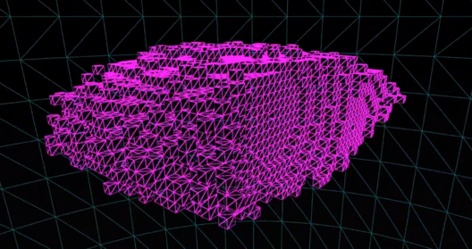
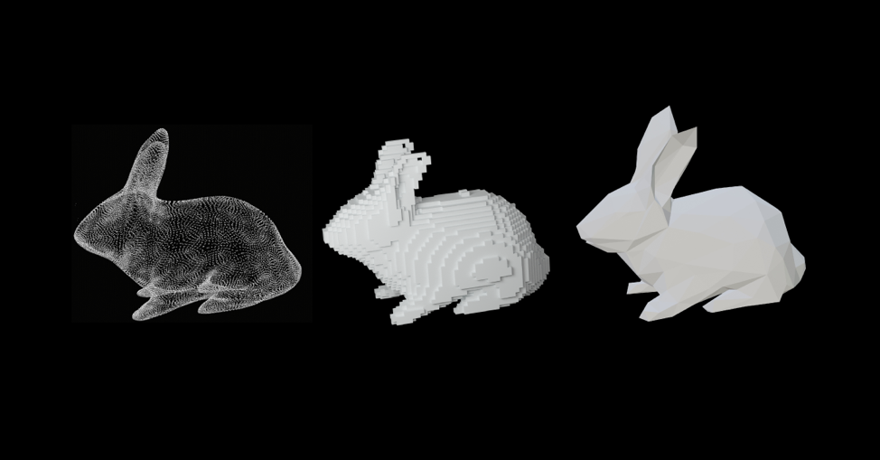
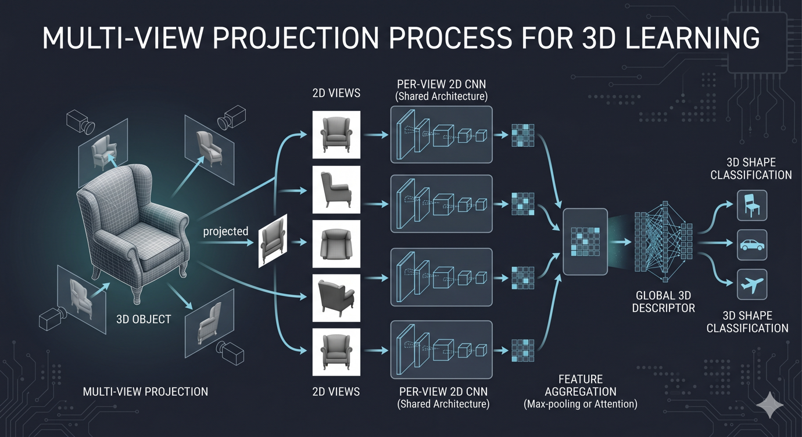
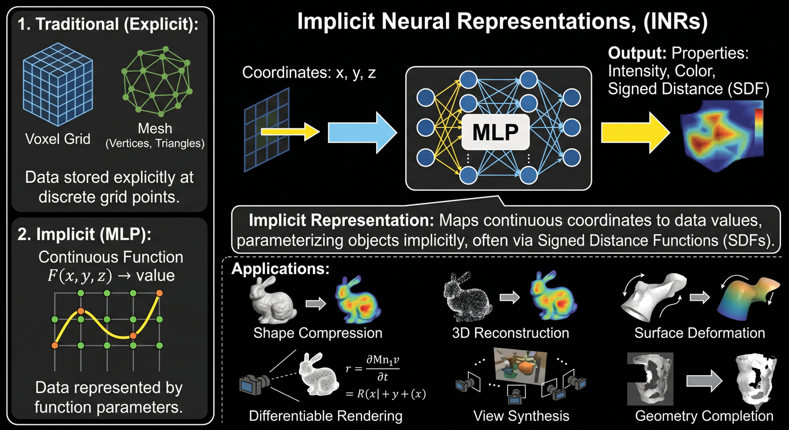
2.6 Comparison of Representations
| Representation | Structure | Resolution | Memory | Common Architectures |
|---|---|---|---|---|
| Point Cloud | Unordered set | Sensor-dependent | Moderate | PointNet, PointNet++, DGCNN |
| Voxel Grid | Regular 3D grid | Fixed (e.g. 64³) | High (cubic) | 3D CNN, MinkowskiNet |
| Mesh | Vertices + Faces | Adaptive | Low–Moderate | MeshCNN, GCN |
| Multi-View | 2D projections | Image resolution | Moderate | MVCNN, RotationNet |
| Implicit (NeRF) | Continuous function | Arbitrary | Network params | NeRF, DeepSDF, 3DGS |
3D Sensing Technologies
The quality and characteristics of 3D data are fundamentally shaped by the sensing technology used for acquisition.
3.1 LiDAR (Light Detection and Ranging)
LiDAR emits laser pulses and measures time-of-flight. Modern systems (Velodyne VLP-16/64, Ouster OS1) produce 360° scans with 100–200m range. Solid-state variants trade field of view for smaller form factor and lower cost. High geometric accuracy, but sparse at long range and lacks color unless fused with cameras.
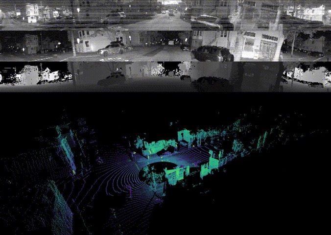
3.2 RGB-D Cameras
Microsoft Kinect, Intel RealSense, Apple LiDAR capture color + per-pixel depth via structured light or time-of-flight. Dense, colored point clouds at 0.5–10m. Basis of ScanNet and S3DIS datasets.
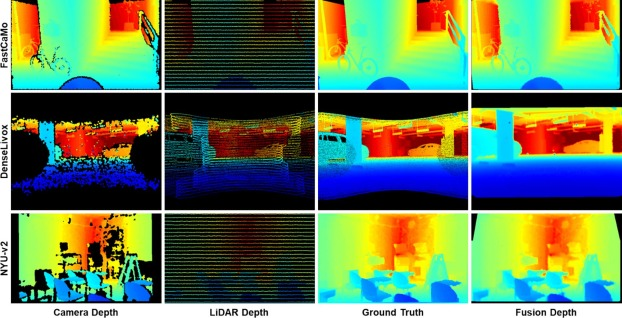
3.3 Photogrammetry / SfM
Reconstructs 3D from 2D images via feature matching and triangulation. COLMAP is the workhorse SfM pipeline, densified with Multi-View Stereo. UAV photogrammetry is standard for surveying, agriculture, and cultural heritage.
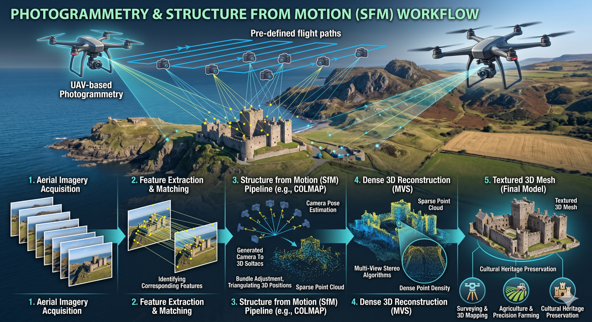
3.4 Radar & Emerging Modalities
Millimeter-wave radar is robust to rain, fog, snow where LiDAR and cameras fail. Sparser and noisier, but complements optical sensors in multi-modal fusion. Emerging: event cameras, acoustic sensors, 4D radar with Doppler velocity.
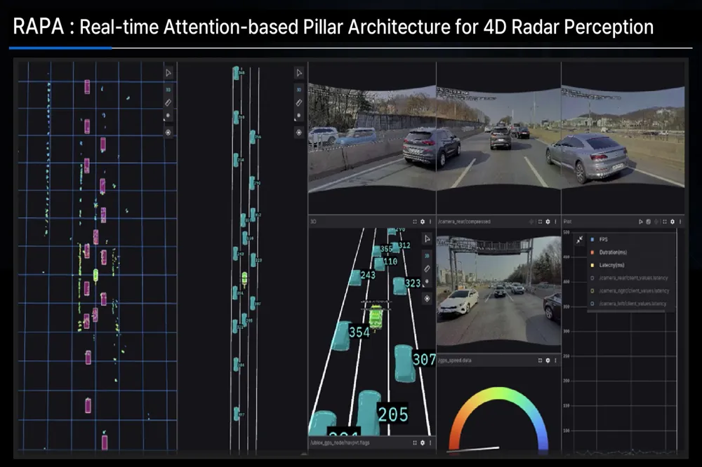
Foundational Deep Learning Architectures
The landmark networks that established point cloud deep learning — still serving as backbones for modern methods.
4.1 PointNet CVPR 2017
The first architecture to directly consume raw point clouds — no voxelization, no images. Three core design principles solve fundamental challenges:
- Permutation Invariance: shared MLP per point + symmetric max-pool aggregation.
- Transformation Invariance: T-Nets predict 3×3 (input) and 64×64 (feature) alignment matrices.
- Architecture: N×3 → shared MLP (64→128→1024) → max-pool → global feature → FC → class scores.
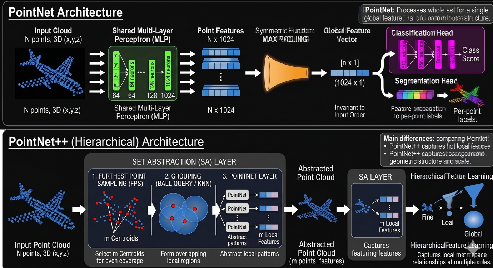
4.2 PointNet++ NeurIPS 2017
Addresses local-structure blindness via hierarchical Set Abstraction layers:
- Sampling: Farthest Point Sampling (FPS) selects centroids.
- Grouping: Ball query / kNN for each local region.
- PointNet Layer: mini-PointNet extracts features per region.
- MSG: Multi-Scale Grouping handles non-uniform density.
- Feature Propagation: inverse-distance interpolation for per-point segmentation.
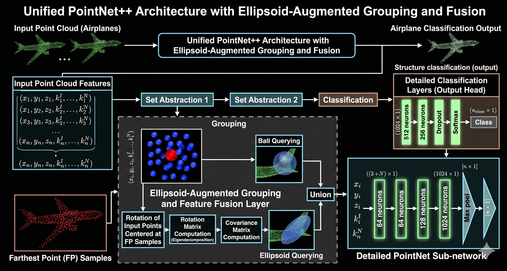
4.3 DGCNN — Dynamic Graph CNN ACM TOG 2019
Introduces EdgeConv: builds a kNN graph in feature space (not original 3D space) and recomputes it at every layer. Edge features h(xᵢ, xⱼ) = MLP(xᵢ, xⱼ − xᵢ) aggregated via max-pool. Captures semantic similarity beyond spatial proximity.
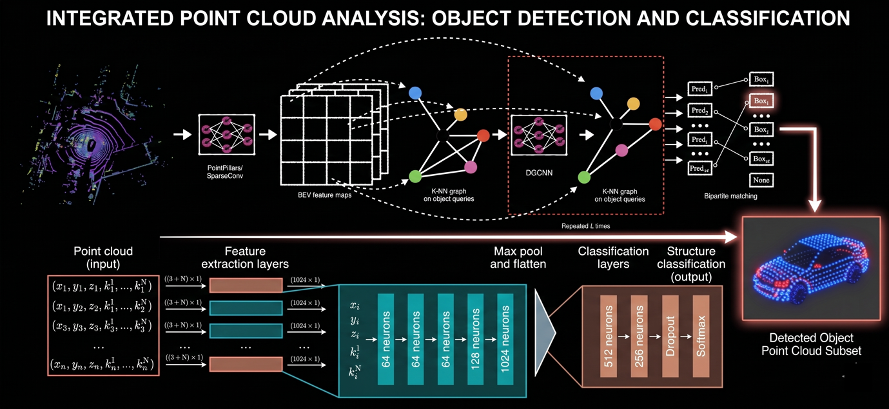
4.4 Point Transformer ICCV 2021
Adapts self-attention to points with vector attention (weights are vectors, not scalars). Attention computed between a query point and its kNN, with positional encoding for relative geometry. Point Transformer V3 (2024) uses serialization-based attention for SOTA across SemanticKITTI, nuScenes, and ScanNet.
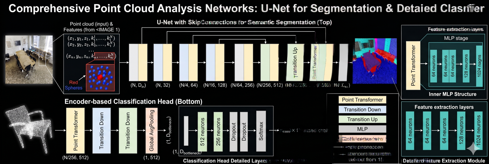
4.5 LitePT — Lite Point Transformer SOTA 2025
A highly optimized hybrid architecture that addresses the computational bottlenecks of PTv3 by strategically decoupling convolutions and attention on a multi-scale perspective:
- Sparse convolutions in early, high-resolution stages (cheap geometric features).
- Self-attention only in deep layers for long-range context.
- PointROPE: novel training-free 3D positional encoding.
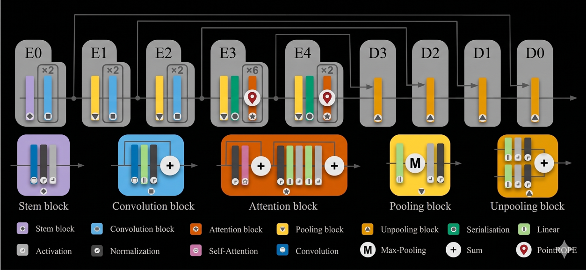
4.6 Sparse Convolution Networks
MinkowskiNet, SparseConvNet, TorchSparse apply 3D convolutions only on occupied voxels — avoiding the cubic memory cost of dense grids. Backbone of many state-of-the-art methods on SemanticKITTI and ScanNet. Key insight: real-world 3D scenes are overwhelmingly empty space.
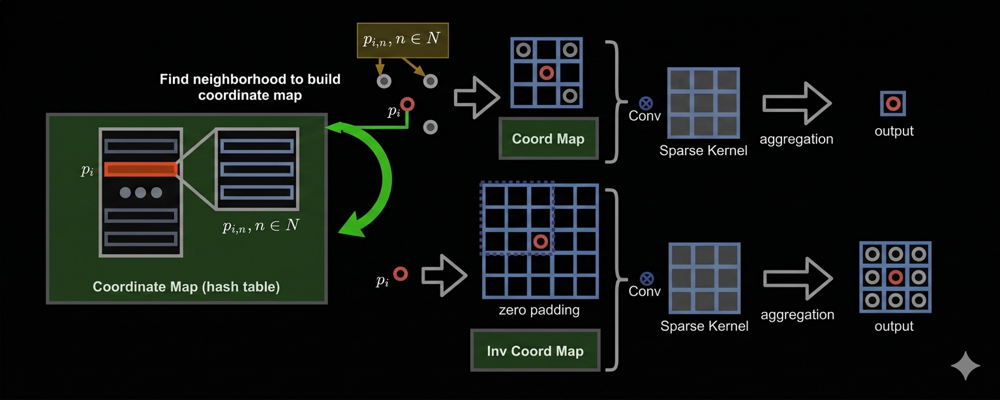
4.7 Architecture Comparison
| Architecture | Year | Mechanism | Local Features | Scalability |
|---|---|---|---|---|
| PointNet | 2017 | Shared MLP + Max Pool | No | Good |
| PointNet++ | 2017 | Hierarchical Set Abstraction | Yes (ball query) | Moderate |
| DGCNN | 2019 | Dynamic Graph EdgeConv | Yes (kNN graph) | Moderate |
| Point Transformer | 2021 | Vector Self-Attention | Yes (kNN attention) | Moderate–Good |
| MinkowskiNet | 2019 | Sparse 3D Conv | Yes (voxel) | Excellent |
| KPConv | 2019 | Kernel Point Conv | Yes (continuous) | Good |
| LitePT | 2025 | Sparse Conv + Attention (PointROPE) | Yes (sparse conv) | Excellent |
3D Point Cloud Segmentation
Arguably the most important task in 3D scene understanding — foundation for reasoning about objects, surfaces, and spatial relationships.
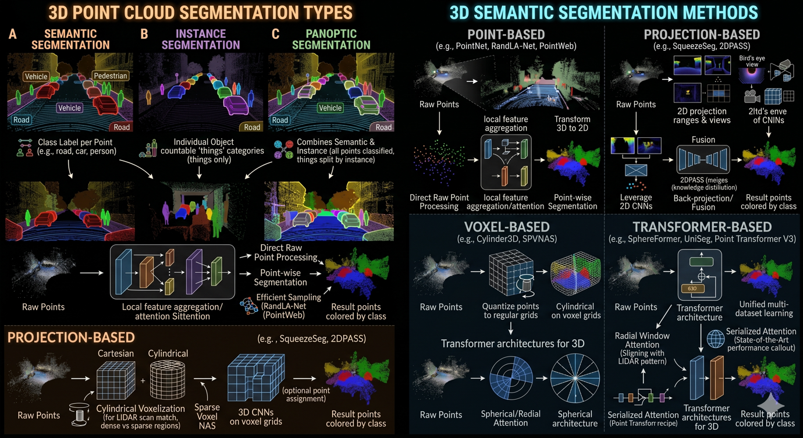
5.1 Semantic Segmentation Approaches
Point-Based
Operate directly on raw point clouds. RandLA-Net (CVPR 2020) scales to millions of points via random sampling + attentive pooling. PointWeb models all pairwise interactions within local regions.
Projection-Based
SqueezeSeg, SqueezeSegV2 project LiDAR into range images for efficient 2D CNNs. 2DPASS (ECCV 2022) fuses 2D image features with 3D points via knowledge distillation.
Voxel-Based
Cylinder3D (CVPR 2021) uses cylindrical voxelization matching LiDAR's scan pattern. SPVNAS applies NAS to find optimal sparse voxel architectures.
Transformer-Based
SphereFormer, UniSeg, Point Transformer V3 — SOTA across SemanticKITTI, nuScenes, ScanNet.
5.2 Instance Segmentation
PointGroup (CVPR 2020): dual-branch architecture — semantic + offset toward centroids. SoftGroup (CVPR 2022) improves with soft scores and top-down refinement. Mask3D (ICRA 2023) formulates 3D instance seg as direct set prediction with transformer decoders.
5.3 Panoptic Segmentation
Unified framework: countable things get instance IDs; stuff (ground, walls) gets semantic only. Panoptic-PolarNet, DS-Net, EfficientLPS target outdoor LiDAR and indoor scenes respectively.
5.4 Part Segmentation
Decomposes objects into parts (airplane: wings, fuselage, tail). ShapeNet-Part is the standard benchmark: 16,881 shapes, 16 categories, 50 part classes. PartNet adds finer hierarchical annotations.
3D Object Detection & Classification
Localize objects in 3D by predicting oriented bounding boxes — critical for autonomous driving.
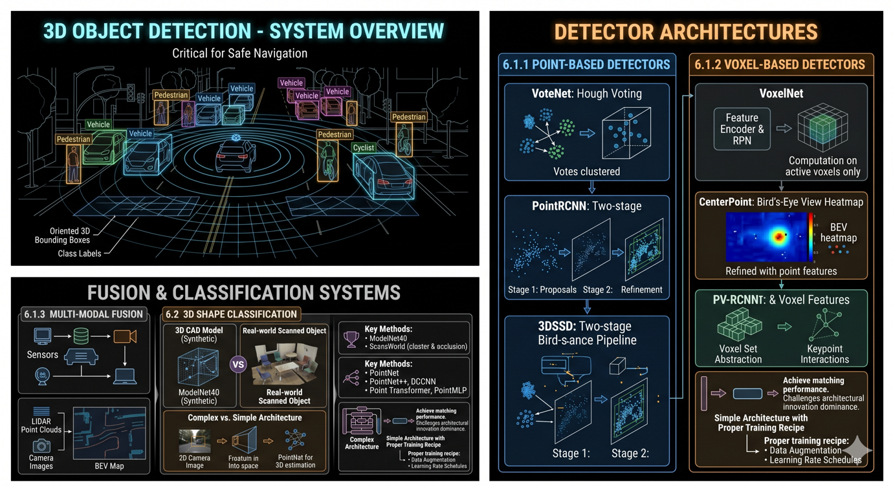
6.1 Detector Families
Point-Based Detectors
VoteNet (ICCV 2019) adapts Hough voting: each point votes for its object center. PointRCNN (CVPR 2019) runs a two-stage pipeline directly on raw points. 3DSSD (CVPR 2020) achieves single-stage detection via feature-distance sampling.
Voxel-Based Detectors
VoxelNet (CVPR 2018), SECOND (spatially-sparse conv, 2018), CenterPoint (CVPR 2021, BEV heatmap), PV-RCNN (CVPR 2020, point+voxel fusion).
Multi-Modal Fusion
BEVFusion (2023): LiDAR + camera in unified bird's-eye view. TransFusion (CVPR 2022): transformer cross-attention. Frustum PointNets (CVPR 2018): 2D detections → 3D frustums.
6.2 3D Shape Classification
Single label per object. Benchmarks: ModelNet40 (40 classes, 12,311 CAD models), ScanObjectNN (real scans with clutter, 15 classes). SOTA: >93% on ModelNet40, ~88% on ScanObjectNN.
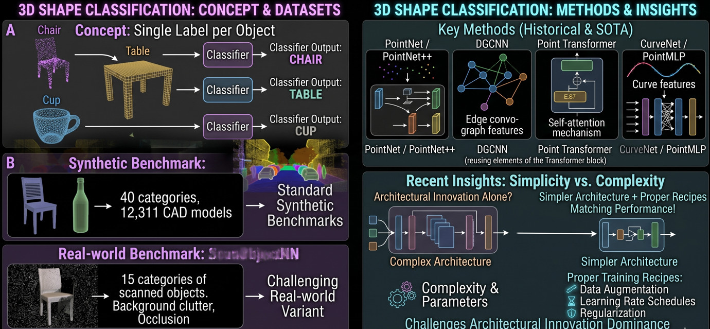
Point Cloud Enhancement
Raw sensor point clouds are noisy, incomplete, and sparse. Enhancement techniques improve data quality for downstream tasks.
7.1 Denoising
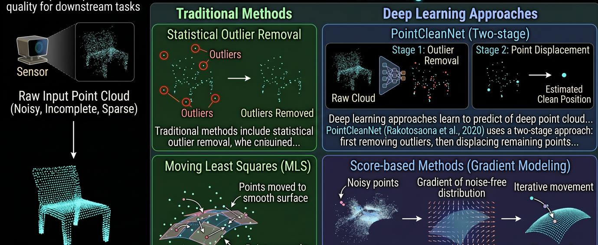
7.2 Completion
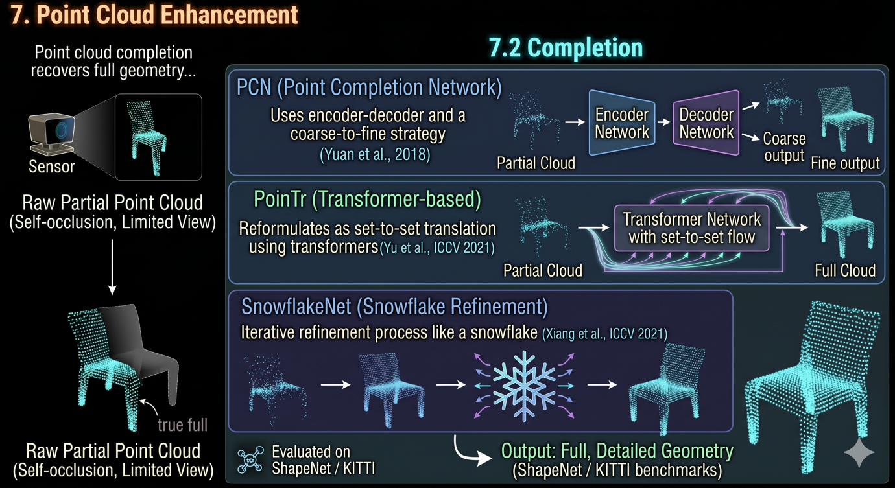
7.3 Upsampling
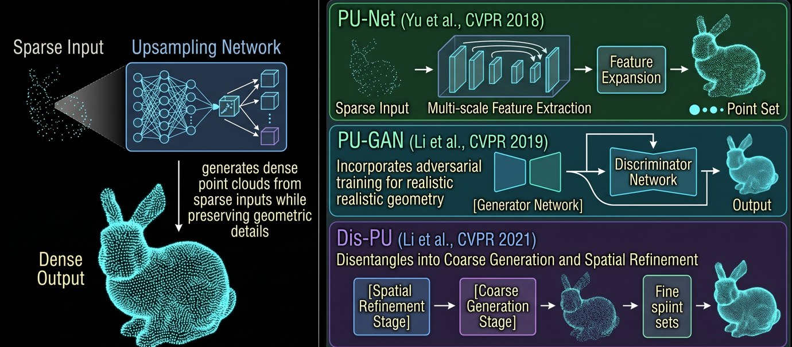
7.4 Registration
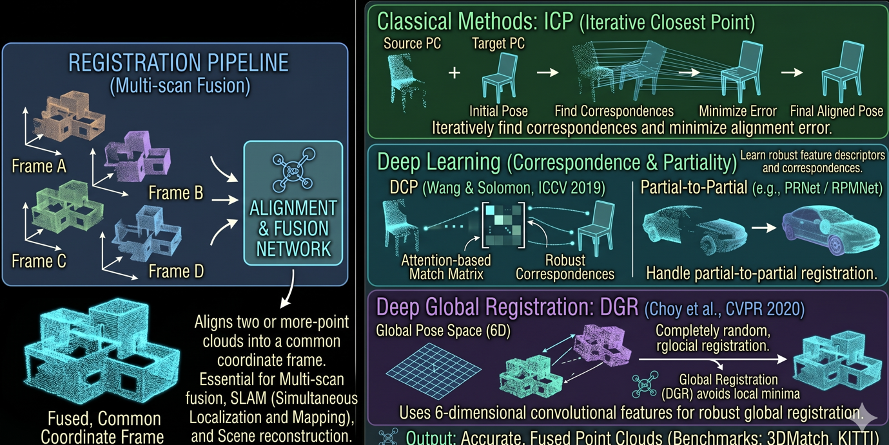
Neural Radiance Fields & 3D Gaussian Splatting
The 2020 arrival of NeRF and 2023 breakthrough of 3DGS transformed 3D scene representation and novel view synthesis — increasingly intersecting with point cloud processing.
8.1 Neural Radiance Fields (NeRF)
Mildenhall et al. (ECCV 2020) represent a scene as a continuous function F(x, y, z, θ, φ) → (r, g, b, σ). An MLP trained on multi-view images with known camera poses. Novel views via differentiable volume rendering along camera rays.
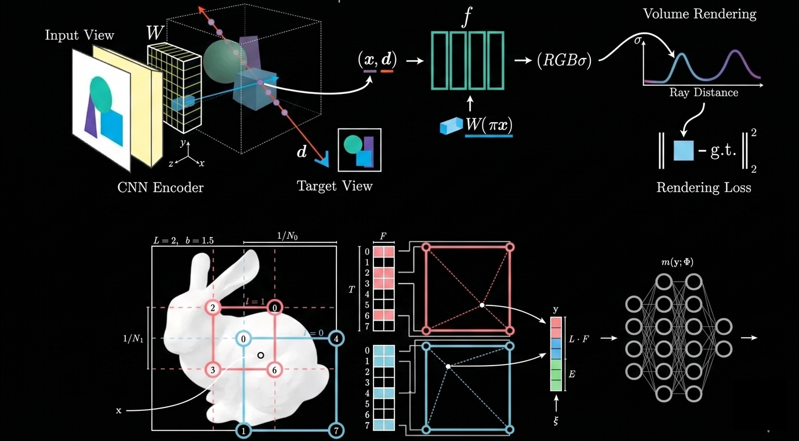
Key Variants
- Mip-NeRF (ICCV 2021): cone tracing replaces point sampling — anti-aliasing.
- Mip-NeRF 360: unbounded scene extension.
- Instant-NGP (SIGGRAPH 2022): multi-resolution hash encoding — training in seconds.
- TensoRF (ECCV 2022): tensor decomposition for compact storage.
Beyond novel views: dynamic scenes (D-NeRF, Nerfies), surface reconstruction (NeuS, Neuralangelo), large-scale urban (Block-NeRF, Urban Radiance Fields), SLAM, generative modeling.
8.2 3D Gaussian Splatting (3DGS)
Kerbl et al. (SIGGRAPH 2023): scenes represented as anisotropic 3D Gaussians parameterized by position, covariance, opacity, and spherical-harmonic view-dependent color. Explicit rather than implicit, enabling real-time rendering (100+ FPS) via tile-based rasterization.
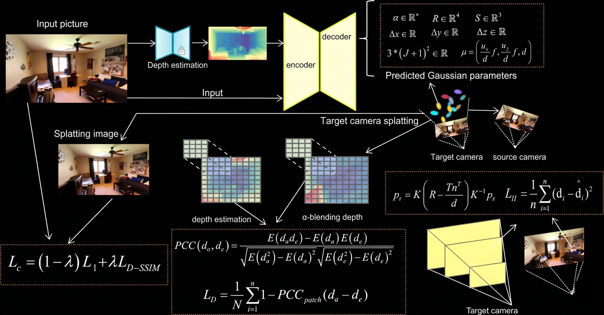
Advantages Over NeRF
Real-time rendering, explicit geometry (no ray marching), direct editability, faster training. The preferred method for VR/AR, robotics, and digital twins.
Recent Advances
- 2DGS (2024): 2D Gaussian disks → better surface reconstruction.
- GS-SLAM: real-time dense mapping.
- Gaussian Frosting, SuGaR: mesh extraction from Gaussians.
- NeRF-GS (ICCV 2025): NeRF's continuous modeling + 3DGS rendering.
8.3 Relationship to Point Clouds
NeRF and 3DGS both start from sparse SfM point clouds. 3DGS is essentially a learned, enriched point cloud — each Gaussian center carries geometric + appearance attributes. Dense point clouds extractable from both for downstream processing; pre-trained point features can initialize radiance-field optimization.
Self-Supervised & Label-Efficient Learning
Annotating 3D data is far more expensive than 2D — driving research into reducing annotation requirements.
9.1 Self-Supervised Pre-Training
- Point-MAE (ECCV 2022): masked autoencoding — predict masked point patches.
- Point-BERT (CVPR 2022): VQ-VAE tokenization + BERT-style masked prediction.
- PointContrast (ECCV 2020): contrastive learning between corresponding points across views.
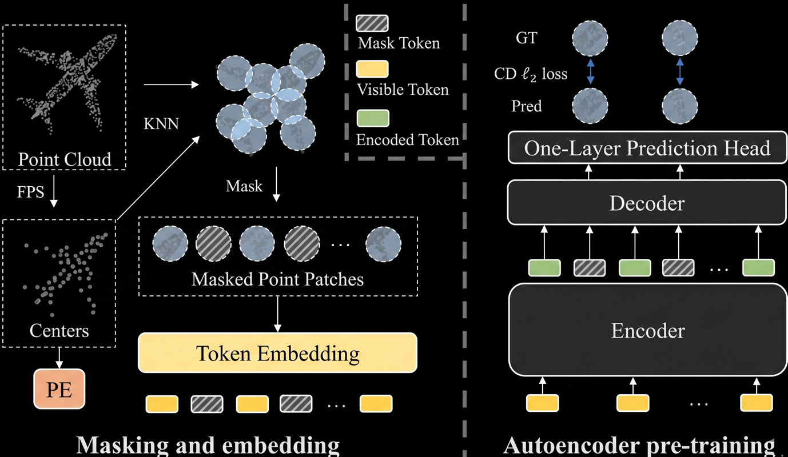
9.2 Weakly / Semi-Supervised
Train with scene-level, sparse point, bounding box, or subcloud annotations. Common: 1% or 0.1% labeled points + consistency regularization / pseudo-labeling. Semi-supervised methods use mean-teacher, self-training, contrastive regularization.
9.3 Language-Guided 3D
Align 3D features with CLIP / OpenCLIP text embeddings. ScanNet200 benchmark (ECCV 2022) showed >5% mIoU gains from language-grounded pre-training for rare classes. OpenScene, LERF extend to open-vocabulary 3D understanding.
9.4 Foundation Models for 3D
SAM3D, Segment3D adapt SAM to point clouds. Point-Bind and Point-LLM connect 3D encoders with LLMs for multi-modal reasoning. Early stages, pointing toward general-purpose 3D understanding via natural language.
Benchmark Datasets & Evaluation Metrics
Standardized datasets are essential for fair comparison and tracking progress.
10.1 Object-Level Datasets
| Dataset | Type | Categories | Size | Primary Task |
|---|---|---|---|---|
| ModelNet40 | Synthetic CAD | 40 | 12,311 | Classification |
| ModelNet10 | Synthetic CAD | 10 | 4,899 | Classification |
| ShapeNet | Synthetic CAD | 55 (Core) | 51,127 | Multiple |
| ShapeNet-Part | Synthetic CAD | 16 (50 parts) | 16,881 | Part Segmentation |
| ScanObjectNN | Real scans | 15 | 2,902 | Classification |
| PartNet | Synthetic CAD | 24 (fine) | 26,671 | Hierarchical Part |
10.2 Indoor Scene Datasets
| Dataset | Sensor | Scenes | Annotations | Primary Task |
|---|---|---|---|---|
| ScanNet v2 | RGB-D | 1,513 scans · 707 rooms | 20 (200 in ScanNet200) | Semantic / Instance |
| S3DIS | Matterport | 6 areas · 272 rooms | 13 classes | Semantic |
| Matterport3D | Matterport | 90 buildings | 40 classes | Semantic |
| SUN RGB-D | RGB-D | 10,335 images | 37 classes | Detection / Seg. |
10.3 Outdoor / Autonomous Driving Datasets
| Dataset | Sensor | Sequences | Annotations | Primary Task |
|---|---|---|---|---|
| SemanticKITTI | Velodyne-64 | 22 seqs · 43K scans | 28 classes | Semantic |
| nuScenes | 32-beam LiDAR + 6 cams | 1,000 scenes | 23 classes + 3D boxes | Det. / Seg. |
| KITTI 3D | Velodyne-64 + stereo | 7,481 train/test | Car/Ped/Cyclist | 3D Detection |
| Waymo Open | Top + 4 side LiDAR | 1,150 segments | 4 classes + 3D boxes | Det. / Seg. |
| Argoverse 2 | 2× 32-beam LiDAR | 1,000 logs | 30 classes | Det. / Forecasting |
10.4 Evaluation Metrics
Practical Implementation Guide
Frameworks, preprocessing, training strategies, and the pitfalls to avoid.
11.1 Software Frameworks
| Framework | Language | Key Features |
|---|---|---|
| PyTorch3D (Meta) | Python / CUDA | Differentiable rendering, mesh ops, point cloud ops |
| Open3D | Python / C++ | Point cloud I/O, viz, ICP, surface reconstruction |
| MinkowskiEngine | Python / CUDA | Sparse tensor ops, sparse 3D convolutions |
| TorchSparse | Python / CUDA | Efficient sparse convolutions, point-voxel fusion |
| PointCloud Library (PCL) | C++ | Classical filtering, segmentation, registration |
| MMDetection3D | Python | Unified detection framework, multiple backbones |
| Nerfstudio | Python | Modular NeRF framework with GUI, supports 3DGS |
| PyTorch Geometric | Python / CUDA | GNNs, point cloud ops via message passing |
11.2 Preprocessing Pipeline
- Coordinate normalization — center and scale to unit sphere / bbox.
- Downsampling — voxel grid or FPS to target point count.
- Augmentation — random rotation, scaling, jittering, elastic distortion, random dropout, mixup.
- Normal estimation — PCA on local neighborhoods for methods requiring normals.
- Handcrafted features — FPFH, SHOT as auxiliary descriptors.
11.3 Training Strategies
Use cosine annealing / one-cycle LR schedules. Enable FP16 mixed precision — 3D data is memory-hungry. Apply gradient accumulation for effective larger batch sizes. Class-weighted or focal loss to address severe imbalance (ground ≫ cyclists in driving scenes). Aggressive augmentation.
11.4 Common Pitfalls
Applications
Current Challenges & Future Directions
13.1 Open Challenges
13.2 Emerging Research Directions
Key References
Foundational Architectures
- C.R. Qi et al. PointNet: Deep Learning on Point Sets for 3D Classification and Segmentation. CVPR 2017.
- C.R. Qi et al. PointNet++: Deep Hierarchical Feature Learning on Point Sets in a Metric Space. NeurIPS 2017.
- Y. Wang et al. Dynamic Graph CNN (DGCNN) for Learning on Point Clouds. ACM TOG 2019.
- H. Zhao et al. Point Transformer. ICCV 2021.
- C. Choy et al. 4D Spatio-Temporal ConvNets (MinkowskiNet). CVPR 2019.
- H. Thomas et al. KPConv: Flexible and Deformable Convolution for Point Clouds. ICCV 2019.
3D Segmentation
- Q. Hu et al. RandLA-Net: Efficient Semantic Segmentation of Large-Scale Point Clouds. CVPR 2020.
- H. Zhu et al. Cylindrical and Asymmetrical 3D Convolutions for LiDAR. CVPR 2021.
- L. Jiang et al. PointGroup: Dual-Set Grouping for 3D Instance Seg. CVPR 2020.
- J. Schult et al. Mask3D: Mask Transformer for 3D Instance Seg. ICRA 2023.
3D Object Detection
- C.R. Qi et al. Deep Hough Voting (VoteNet). ICCV 2019.
- T. Yin et al. CenterPoint: Center-based 3D Detection and Tracking. CVPR 2021.
- S. Shi et al. PV-RCNN: Point-Voxel Feature Set Abstraction. CVPR 2020.
Neural Radiance Fields & Gaussian Splatting
- B. Mildenhall et al. NeRF: Representing Scenes as Neural Radiance Fields. ECCV 2020.
- B. Kerbl et al. 3D Gaussian Splatting for Real-Time Radiance Field Rendering. SIGGRAPH 2023.
- T. Müller et al. Instant-NGP: Multiresolution Hash Encoding. SIGGRAPH 2022.
Self-Supervised & Pre-Training
- Y. Pang et al. Point-MAE: Masked Autoencoders for Point Cloud Self-Supervised Learning. ECCV 2022.
- X. Yu et al. Point-BERT: Pre-training 3D Transformers with Masked Point Modeling. CVPR 2022.
- D. Rozenberszki et al. Language-Grounded Indoor 3D Semantic Segmentation (ScanNet200). ECCV 2022.
Surveys
- Y. Guo et al. Deep Learning for 3D Point Clouds: A Survey. IEEE TPAMI 2021.
- Deep Learning for 3D Point Cloud Enhancement: A Survey. arXiv:2411.00857, 2024.
- A Survey of Label-Efficient Deep Learning for 3D Point Clouds. IEEE TPAMI 2024.
- NeRF: Neural Radiance Field in 3D Vision: A Comprehensive Review. arXiv:2210.00379, 2025.